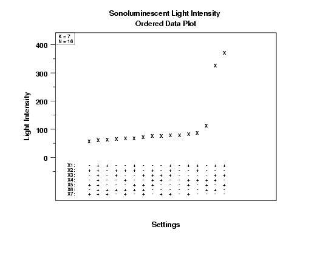
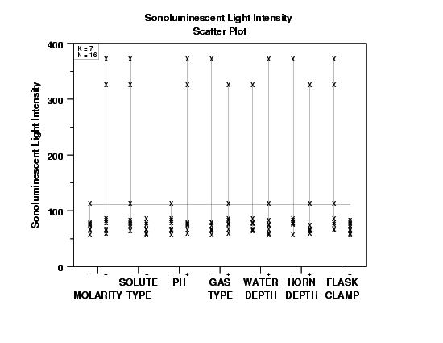
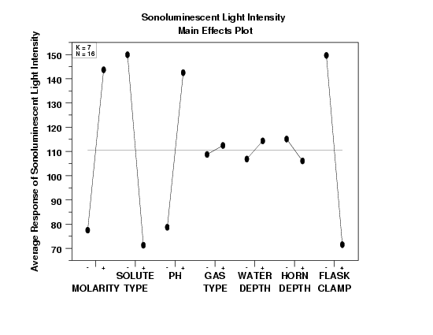

5.
Process Improvement
5.6.
Case Studies
5.6.2.
Sonoluminescent Light Intensity Case Study
5.6.2.2.
|
Initial Plots/Main Effects
|
|
|
Plot the Data: Ordered Data Plot
|
The first step in the analysis is to generate an
ordered data plot.

|
|
Conclusions from the Ordered Data Plot
|
We can make the following conclusions based on the ordered data
plot.
- Two points clearly stand out. The first 13 points lie in the
50 to 100 range, the next point is greater than 100, and the
last two points are greater than 300.
- Important Factors: For these two highest points, factors
X1, X2, X3, and X7 have the same
value (namely, +, -, +, -, respectively) while X4,
X5, and X6 have differing values. We
conclude that X1, X2, X3, and X7
are potentially important factors, while X4, X5,
and X6 are not.
- Best Settings: Our first pass makes use of the settings at the
observed maximum (Y = 373.8). The settings for this
maximum are (+, -, +, -, +, -, -).
|
|
Plot the Data: DOE Scatter Plot
|
The next step in the analysis is to generate a
DOE scatter plot.

|
|
Conclusions from the DOE Scatter Plot
|
We can make the following conclusions based on the DOE scatter
plot.
- Important Factors: Again, two points dominate the plot.
For X1, X2, X3, and X7, these two
points emanate from the same setting, (+, -, +, -), while for
X4, X5, and X6 they emanate from different
settings. We conclude that X1, X2, X3,
and X7 are potentially important, while X4,
X5, and X6 are probably not important.
- Best Settings: Our first pass at best settings yields
(X1 = +, X2 = -, X3 = +, X4 =
either, X5 = either, X6 = either, X7 = -).
|
|
Check for Main Effects: DOE Mean Plot
|
The DOE mean plot is generated
to more clearly show the main effects:

|
|
Conclusions from the DOE Mean Plot
|
We can make the following conclusions from the DOE mean plot.
- Important Factors:
X2 (effect = large: about -80)
X7 (effect = large: about -80)
X1 (effect = large: about 70)
X3 (effect = large: about 65)
X6 (effect = small: about -10)
X5 (effect = small: between 5 and 10)
X4 (effect = small: less than 5)
- Best Settings: Here we step through each factor, one by one,
and choose the setting that yields the highest average
for the sonoluminescent light intensity:
(X1,X2,X3,X4,X5,X6,X7)
= (+,-,+,+,+,-,-)
|
|
Comparison of Plots
|
All of the above three plots are used primarily to determine the most
important factors. Because it plots a summary statistic rather
than the raw data, the DOE mean plot shows the ordering of the main
effects most clearly. However, it is still recommended to generate
either the ordered data plot or the DOE scatter plot (or both). Since
these plot the raw data, they can sometimes reveal features of the
data that might be masked by the DOE mean plot.
In this case, the ordered data plot and the DOE scatter plot
clearly show two dominant points. This feature would not be
obvious if we had generated only the DOE mean plot.
Interpretation-wise, the most important factor X2 (solute) will,
on the average, change the light intensity by about 80 units
regardless of the settings of the other factors. The other
factors are interpreted similarly.
In terms of the best settings, note that the ordered data plot,
based on the maximum response value, yielded
Note that a consensus best value, with "." indicating a setting for
which the three plots disagree, would be
Note that the factor for which the settings disagree, X4,
invariably defines itself as an "unimportant" factor.
|


{kind=link}
{kind=link}
{kind=link}